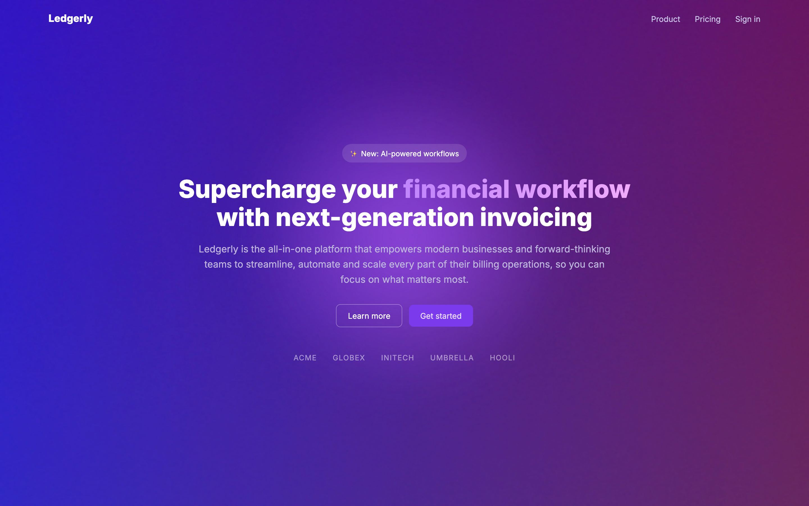
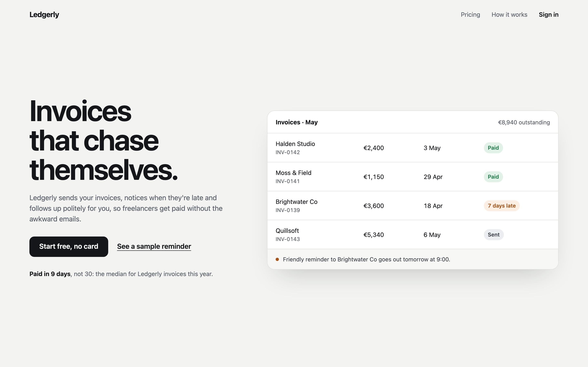
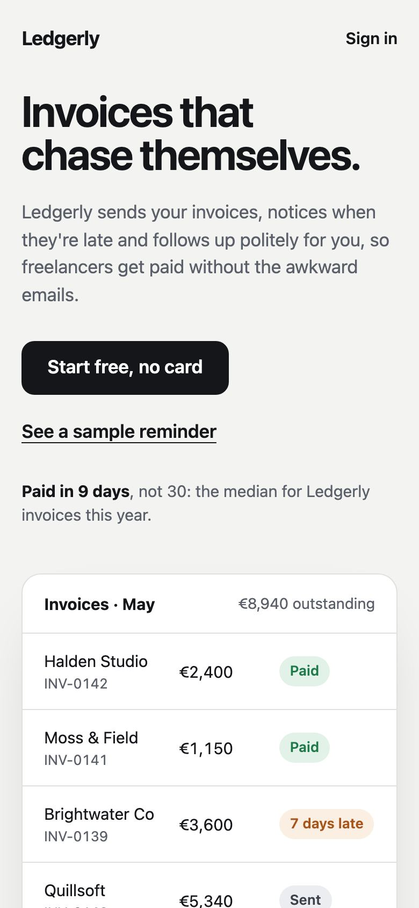

Hero revamp: before and after
Failures4 → 0
Warnings16 → 0
Desktop LCP1120 ms → 244 ms
Desktop


| desktop | Before | After | |
|---|---|---|---|
| LCP | 1120 ms | 244 ms | -78% |
| CLS | 0 | 0 | |
| First contentful paint | 428 ms | 244 ms | -43% |
| Total blocking time | 0 ms | 0 ms | |
| Render-blocking files | 1 | 0 | -100% |
| Headline words | 7 | 4 | |
| Headline lines | 2 | 3 | +50% |
| Headline size | 44px | 72px | |
| Headline contrast (2nd-percentile pixel) | 1.97:1 | 16.41:1 | +733% |
| Subhead words | 31 | 22 | |
| CTAs in first screen | 2 | 1 | |
| Smallest CTA height | 39px | 50px | +28% |
| Lowest CTA label contrast | 4.41:1 | 18.11:1 | +311% |
| First-load weight | 0.21 MB | 0 MB | -100% |
| Motion left on under reduced motion | 1 | 0 | -100% |
Phone

| phone | Before | After | |
|---|---|---|---|
| LCP | 1240 ms | 232 ms | -81% |
| CLS | 0.001 | 0 | within noise |
| First contentful paint | 532 ms | 232 ms | -56% |
| Total blocking time | 0 ms | 0 ms | |
| Render-blocking files | 1 | 0 | -100% |
| Headline words | 7 | 4 | |
| Headline lines | 5 | 2 | -60% |
| Headline size | 44px | 40px | |
| Headline contrast (2nd-percentile pixel) | 1.99:1 | 16.41:1 | +725% |
| Subhead words | 31 | 22 | |
| CTAs in first screen | 2 | 1 | |
| Smallest CTA height | 39px | 50px | +28% |
| Lowest CTA label contrast | 4.41:1 | 18.11:1 | +311% |
| First-load weight | 0.21 MB | 0 MB | -100% |
| Motion left on under reduced motion | 1 | 0 | -100% |